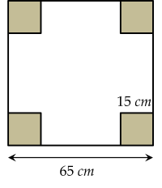

Câu 4. Đại số
Phần III — Trắc nghiệm chọn một phương án
0,21 điểm
Thứ tự thực hiện đúng các phép tính đối với biểu thức có ngoặc là
Câu 13. Đại số
Phần IV — Trắc nghiệm đúng hoặc sai
0,8 điểm
Cho các số $44$ , $7\, 345$ , $18\, 488$ , $66\, 713$ , $289\, 935$ , $1\, 987\, 650$ , $369\, 121\, 600$ .
(Nhấp vào ô màu vàng để chọn đúng / sai)
Mỗi ý a), b), c)… là một phát biểu độc lập: nhấp vào ô để chọn Đúng/Sai,
0,2 điểm mỗi ý.
Câu 14. Hình họcCó vẽ hình
Phần IV — Trắc nghiệm đúng hoặc sai
0,8 điểm
Một miếng bìa hình vuông có độ dài cạnh $65$ cm. Người ta cắt đi bốn góc theo các hình vuông nhỏ có độ dài cạnh $15$ cm (hình vẽ).

(Nhấp vào ô màu vàng để chọn đúng / sai)
Mỗi ý a), b), c)… là một phát biểu độc lập: nhấp vào ô để chọn Đúng/Sai,
0,2 điểm mỗi ý.
Câu 15. Hình họcKhông vẽ hình
Phần V — Trắc nghiệm trả lời ngắn
0,41 điểm
Một siêu thị cần treo đèn LED trang trí xung quanh mép một tấm biển quảng cáo hình chữ nhật có chiều rộng $5$ m và chiều dài $10$ m. Chi phí cho mỗi mét dài của đèn LED là $120$ nghìn đồng. Hỏi siêu thị đó phải trả bao nhiêu tiền khi cần treo đèn LED (bỏ qua tiền công thợ lắp đèn, đơn vị: nghìn đồng)?
Trả lời ngắn — gõ kết quả, kèm đơn vị nếu đề hỏi đơn vị.
Câu 16. Đại số
Phần V — Trắc nghiệm trả lời ngắn
0,41 điểm
Trong đợt tiêm vaccine cho các trường trung học cơ sở, Trung tâm Y tế dự phòng đã huy động $42$ bác sĩ , $70$ y tá và chia thành các tổ tiêm. Việc chia tổ cần đảm bảo sao cho số các bác sĩ được chia đều vào các tổ và số y tá cũng vậy. Có thể chia số các bác sĩ và y tá đó thành nhiều nhất bao nhiêu tổ tiêm?
Trả lời ngắn — gõ kết quả, kèm đơn vị nếu đề hỏi đơn vị.
Câu 17. Đại số
Phần 6 — Tự luận
1,64 điểm
Thực hiện phép tính (bằng cách hợp lí nếu có thể)
a) $273 + 19 + 27$ .
b) $48,27 - 15,27 + 67,27$ .
c) $2\,025^0 + 7^9 : 7^7 + 12 : 2$ .
d) $\{ 20-[30-(5 - 1)^2]+4 \}.25 - 15$ .
Bài làm của bạn:
Câu 18. Đại số
Phần 6 — Tự luận
1,64 điểm
Tìm $x$ , biết:
a) $x-123=17$ .
b) $35 + 5.(x+4)={{2}^{4}}.5$ .
c) $x∈$ Ư $(12);x≥ 6$ .
d) $3.x^2=27$ $(x ∈ ℕ)$ .
Bài làm của bạn:
Câu 19. Đại số
Phần 6 — Tự luận
1,64 điểm
Một cửa hàng có $6$ thùng hàng với khối lượng lần lượt là $43$ kg; $35$ kg; $32$ kg; $24$ kg; $27$ kg; $34$ kg. Trong hai ngày, cửa hàng bán được $5$ thùng hàng (mỗi thùng chỉ bán nguyên thùng), biết khối lượng hàng bán được trong ngày thứ nhất gấp $4$ lần khối lượng hàng bán được trong ngày thứ hai. Hỏi thùng hàng còn lại nặng bao nhiêu ki-lô-gam?
Bài làm của bạn: